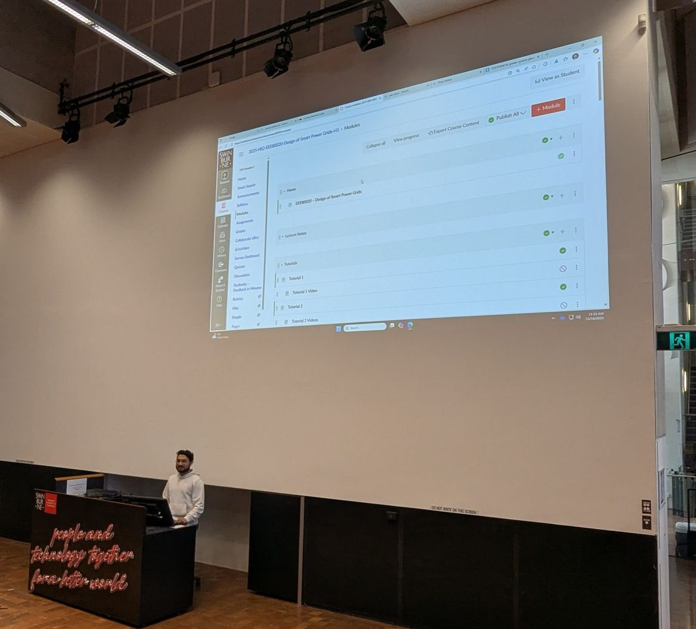

Teaching and service
I've taught engineering in India and Australia, to classes of up to 120 students. I also represent research students in university decisions.

Courses at Swinburne
- 2025 – now
Design of Smart Power Grids
EEE80020 (postgraduate) and EEE40016 (undergraduate)How modern grids handle solar, wind, batteries and electric cars. I prepare tutorials, lab exercises and assessments.
- 2025 – now
Engineering Technologies with Indigenous Context
ENG10006 (first year)Engineering seen from Aboriginal perspectives.
Earlier teaching
- Lab supervision in instrumentation, electric machines and microprocessors, Aligarh Muslim University (2019 – 2020)
- MATLAB and Simulink training for more than 120 engineering students, Arena Multimedia (2021 – 2022)
Service
- Academic Senator, Swinburne University (2026 – now). Elected to represent research students in university policy decisions.
Awards
- Siemens–Swinburne Energy Transition Hub PhD scholarship (2024 – 2027)
- National GATE scholarship, Government of India (2018 – 2020). Top 5% of 93,526 candidates.
- English Access Microscholarship, US Embassy, New Delhi (2009 – 2011)
Talks
- Dec 2025
IEEE ETFG 2025
Wollongong, Australia - 2025
IEEE AUPEC 2025
Brisbane, Australia - Nov 2024
Energy Consortium
Melbourne, Australia - Dec 2021
IEEE ICCCA 2021
Arad, Romania - Nov 2021
Springer ICCAI 2021
Mathura, India